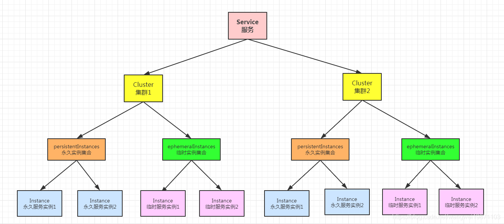
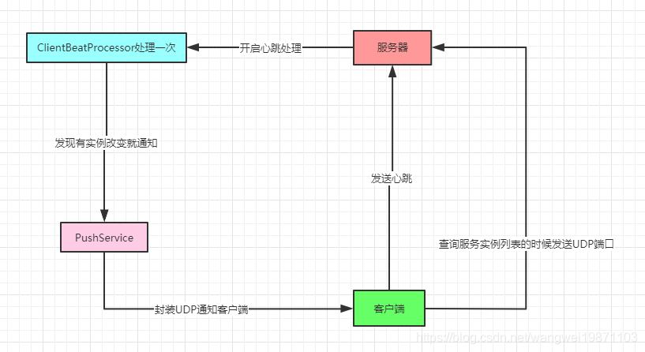
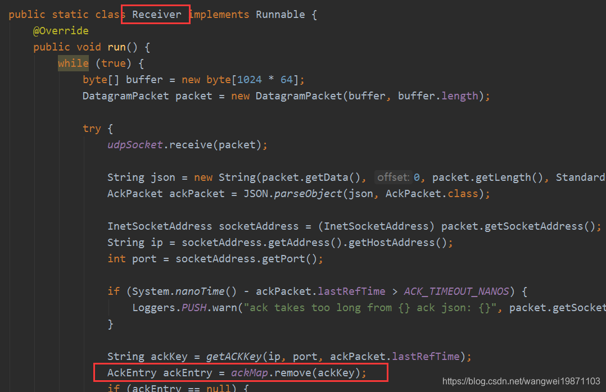
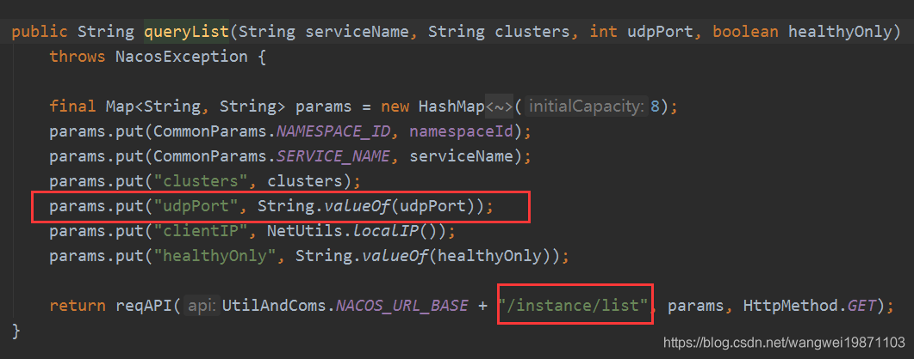

InstanceController#register
x1(value = "", method = RequestMethod.POST)3public String register(HttpServletRequest request) throws Exception {4
5 String serviceName = WebUtils.required(request, CommonParams.SERVICE_NAME);6 String namespaceId = WebUtils.optional(request, CommonParams.NAMESPACE_ID, Constants.DEFAULT_NAMESPACE_ID);7 8 9 // ---看1-2.2步---10 // 执行注册11 serviceManager.registerInstance(namespaceId, serviceName, 12 // ---end---13 // ---看1-2.1步---14 // 解析成instance15 parseInstance(request)16 // ---end---17 );18 19 return "ok";20} 把传过来的参数封装成服务实例Instance 。
311private Instance parseInstance(HttpServletRequest request) throws Exception {2
3 String serviceName = WebUtils.required(request, CommonParams.SERVICE_NAME);4 String app = WebUtils.optional(request, "app", "DEFAULT");5 String metadata = WebUtils.optional(request, "metadata", StringUtils.EMPTY);6
7 Instance instance = getIPAddress(request);8 instance.setApp(app);9 instance.setServiceName(serviceName);10 instance.setInstanceId(instance.generateInstanceId());11 instance.setLastBeat(System.currentTimeMillis());12 if (StringUtils.isNotEmpty(metadata)) {13 instance.setMetadata(UtilsAndCommons.parseMetadata(metadata));14 }15
16 if (!instance.validate()) {17 throw new NacosException(NacosException.INVALID_PARAM, "instance format invalid:" + instance);18 }19
20 if ((ServerMode.AP.name().equals(switchDomain.getServerMode()) && !instance.isEphemeral())) {21 throw new NacosException(NacosException.INVALID_PARAM, "wrong instance type: " + instance.isEphemeral()22 + " in " + switchDomain.getServerMode() + " mode.");23 }24
25 if ((ServerMode.CP.name().equals(switchDomain.getServerMode()) && instance.isEphemeral())) {26 throw new NacosException(NacosException.INVALID_PARAM, "wrong instance type: " + instance.isEphemeral()27 + " in " + switchDomain.getServerMode() + " mode.");28 }29
30 return instance;31} 默认是AP模式，保证高可用，数据最终一致性。
211public void registerInstance(String namespaceId, String serviceName, Instance instance) throws NacosException {2 // ---看1-2.2.1步---3 //创建服务4 createEmptyService(namespaceId, serviceName, instance.isEphemeral());5 // ---end---6 7 // ---看1-2.2.2步---8 //获取服务9 Service service = getService(namespaceId, serviceName);10 // ---end---11
12 if (service == null) {13 throw new NacosException(NacosException.INVALID_PARAM,14 "service not found, namespace: " + namespaceId + ", service: " + serviceName);15 }16 17 // ---看1-2.2.3步---18 //添加实例19 addInstance(namespaceId, serviceName, instance.isEphemeral(), instance);20 // ---end---21} 最终到createServiceIfAbsent，创建服务实例，然后设置参数，初始化。
351public void createServiceIfAbsent(String namespaceId, String serviceName, boolean local, Cluster cluster) throws NacosException {2 // ---看1-2.2.2步--- 3 // 获取对应命名空间内服务名的实例4 Service service = getService(namespaceId, serviceName);5 // ---end---6 if (service == null) {7 // 创建一个服务8 Loggers.SRV_LOG.info("creating empty service {}:{}", namespaceId, serviceName);9 service = new Service();10 service.setName(serviceName);11 service.setNamespaceId(namespaceId);12 service.setGroupName(NamingUtils.getGroupName(serviceName));13 // now validate the service. if failed, exception will be thrown14 service.setLastModifiedMillis(System.currentTimeMillis());15 // 校验和16 service.recalculateChecksum();17 // 有集群要添加18 if (cluster != null) {19 cluster.setService(service);20 service.getClusterMap().put(cluster.getName(), cluster);21 }22 // 服务验证，服务和集群名验证23 service.validate();24 25 // ---往下看1---26 // 服务初始化27 putServiceAndInit(service);28 // ---end---29 30 // 永久服务还要添加到一致性服务里31 if (!local) {32 addOrReplaceService(service);33 }34 }35}putServiceAndInit：临时的服务实例key可能是这样com.alibaba.nacos.naming.iplist.ephemeral.public##DEFAULT_GROUP@@cloud-alibaba-provider-payment，永久的是com.alibaba.nacos.naming.iplist.public##DEFAULT_GROUP@@cloud-alibaba-provider-payment，其实就是临时的在public前多了ephemeral。
161private void putServiceAndInit(Service service) throws NacosException {2 // 添加到命名空间中3 putService(service);4 5 // ---往下看2---6 // 心跳初始化7 service.init();8 // ---end---9 10 // ---往下看3---11 // 生成key放入一致性服务里，永久的和临时的12 consistencyService.listen(KeyBuilder.buildInstanceListKey(service.getNamespaceId(), service.getName(), true), service);13 consistencyService.listen(KeyBuilder.buildInstanceListKey(service.getNamespaceId(), service.getName(), false), service);14 // ---end---15 Loggers.SRV_LOG.info("[NEW-SERVICE] {}", service.toJSON());16}init()：服务初始化，开启一个心跳检测，检测所有的服务实例是否还在，延迟5秒，间隔5秒一次。
211private ClientBeatCheckTask clientBeatCheckTask = new ClientBeatCheckTask(this);2
3
4 public void init() {5 // 心跳检查，延迟5秒，间隔5秒6 HealthCheckReactor.scheduleCheck(clientBeatCheckTask);7
8 for (Map.Entry<String, Cluster> entry : clusterMap.entrySet()) {9 entry.getValue().setService(this);10 entry.getValue().init();11 }12 }13
14// HealthCheckReactor#scheduleCheck：开启一个延迟`5`秒，间隔`5`秒的心跳任务。15// 心跳任务存储16private static Map<String, ScheduledFuture> futureMap = new ConcurrentHashMap<>();17
18// 心跳任务19public static void scheduleCheck(ClientBeatCheckTask task) {20 futureMap.putIfAbsent(task.taskKey(), EXECUTOR.scheduleWithFixedDelay(task, 5000, 5000, TimeUnit.MILLISECONDS));21}ConsistencyService#listen：代理了临时和永久两个服务，如果是特殊的com.alibaba.nacos.naming.domains.meta.就直接注册到永久一致性服务和临时一致性服务里。否则的话就看是临时的服务还是永久的，选一个注册进去。
151public void listen(String key, RecordListener listener) throws NacosException {3
4 //特殊前缀key两个都监听5 // this special key is listened by both:6 if (KeyBuilder.SERVICE_META_KEY_PREFIX.equals(key)) {7 persistentConsistencyService.listen(key, listener);8 ephemeralConsistencyService.listen(key, listener);9 return;10 }11 12 // 临时或者永久13 // 添加监听器，添加到临时或者永久的一致性服务的监听器中14 mapConsistencyService(key).listen(key, listener);15}二选一：
51private ConsistencyService mapConsistencyService(String key) {2 return KeyBuilder.matchEphemeralKey(key) ? 3 ephemeralConsistencyService 4 : persistentConsistencyService;5}ephemeralConsistencyService#listener：临时节点监听，创建一个CopyOnWriteArrayList集合和key的映射，这个集合是可同时读写的，写的时候会复制一份来写，写完再替换旧的，此时读的可能是旧的数据。然后将key监听器放到集合离去。
131public void listen(String key, RecordListener listener) throws NacosException {3 // 创建CopyOnWriteArrayList4 if (!listeners.containsKey(key)) {5 listeners.put(key, new CopyOnWriteArrayList<>());6 }7 // 二次确认不重复添加8 if (listeners.get(key).contains(listener)) {9 return;10 }11 // 添加到创建CopyOnWriteArrayList12 listeners.get(key).add(listener);13}persistentConsistencyService#listener：永久节点监听。
获取对应命名空间内服务名的实例。
171/** 命名空间 组@@服务名 服务实例2 * Map<namespace, Map<group::serviceName, Service>>3 */4private Map<String, Map<String, Service>> serviceMap = new ConcurrentHashMap<>();5
6
7public Service getService(String namespaceId, String serviceName) {8 if (serviceMap.get(namespaceId) == null) {9 return null;10 }11 return chooseServiceMap(namespaceId).get(serviceName);12}13
14// 获取命名空间的服务实例映射：15public Map<String, Service> chooseServiceMap(String namespaceId) {16 return serviceMap.get(namespaceId);17}添加实例了。这里再次获取一次，看是不是为空，空说明可能没心跳被移除了。
261public void addInstance(String namespaceId, String serviceName, boolean ephemeral, Instance... ips) throws NacosException {2 // 获得服务实例key3 String key = KeyBuilder.buildInstanceListKey(namespaceId, serviceName, ephemeral);4 5 // 再次获取服务6 Service service = getService(namespaceId, serviceName);7 8 // 这里再判断下service是否为null比较好，因为可能这个时候也为空，9 // synchronized锁空对象会报异常，空对象没monitor了10 synchronized (service) {11 // ---往下看1---12 // 获取所有该服务的实例13 List<Instance> instanceList = addIpAddresses(service, ephemeral, ips);14 // ---end---15
16 Instances instances = new Instances();17 // 设置到包装对象里18 instances.setInstanceList(instanceList);19 20 // ---往下看6--- 21 // 这里有临时节点和永久节点22 // 放进一致性服务里，其实就是放进临时一致性服务内23 consistencyService.put(key, instances);24 // ---end---25 }26}addIpAddresses：做的是一个添加的操作。
81public static final String UPDATE_INSTANCE_ACTION_ADD = "add";2
3public List<Instance> addIpAddresses(Service service, boolean ephemeral, Instance... ips) throws NacosException {4 // ---往下看2---5 // 更新服务实例ip地址6 return updateIpAddresses(service, UtilsAndCommons.UPDATE_INSTANCE_ACTION_ADD, ephemeral, ips);7 // ---end---8}updateIpAddresses：先是获取老的数据(持久的或者临时的)，从一致性服务里获取，因为这个数据是要同步更新的，所以要拿出来及时更新，然后获取服务实例(持久的或者临时的)，用他们来更新的老的数据，然后遍历新增的实例，如果没有集群的话先创建集群，并初始化集群，会开启心跳检查，最后根据是添加还是删除实例来更新老的实例映射，最后封装成集合返回最新的实例集合。
651public List<Instance> updateIpAddresses(Service service, String action, boolean ephemeral, Instance... ips) throws NacosException {2 // 获取老的实例集合数据3 Datum datum = consistencyService.get(KeyBuilder.buildInstanceListKey(service.getNamespaceId(), service.getName(), ephemeral));4 // ---往下看3---5 // 获取集群中所有相关的实例集合，临时的或者是永久的6 List<Instance> currentIPs = service.allIPs(ephemeral);7 // ---end---8 9 // IP端口和实例的映射10 Map<String, Instance> currentInstances = new HashMap<>(currentIPs.size());11 // 实例ID集合12 Set<String> currentInstanceIds = Sets.newHashSet();13 // 放入对应的集合里14 for (Instance instance : currentIPs) {15 currentInstances.put(instance.toIPAddr(), instance);16 currentInstanceIds.add(instance.getInstanceId());17 }18 19 // 更新后的老的实例集合20 Map<String, Instance> instanceMap;21 // 根据当前服务实例的健康标志和心跳时间，来更新老的实例集合数据22 if (datum != null) {23 // ---往下看4---24 instanceMap = setValid(((Instances) datum.value).getInstanceList(), currentInstances);25 // ---end---26 } else {27 // 重新创建一个28 instanceMap = new HashMap<>(ips.length);29 }30
31 // 遍历新的实例32 for (Instance instance : ips) {33 // 不存在就创建服务实例集群34 if (!service.getClusterMap().containsKey(instance.getClusterName())) {35 Cluster cluster = new Cluster(instance.getClusterName(), service);36 // ---往下看5---37 // 初始化，开启集群心跳检查38 cluster.init();39 // ---end---40 41 // 添加服务实例集群42 service.getClusterMap().put(instance.getClusterName(), cluster);43 Loggers.SRV_LOG.warn("cluster: {} not found, ip: {}, will create new cluster with default configuration.",44 instance.getClusterName(), instance.toJSON());45 }46 47 // 删除操作的话就删除老的实例集合的数据48 if (UtilsAndCommons.UPDATE_INSTANCE_ACTION_REMOVE.equals(action)) {49 instanceMap.remove(instance.getDatumKey());50 } else {51 // 否则添加52 instance.setInstanceId(instance.generateInstanceId(currentInstanceIds));53 instanceMap.put(instance.getDatumKey(), instance);54 }55
56 }57
58 if (instanceMap.size() <= 0 && UtilsAndCommons.UPDATE_INSTANCE_ACTION_ADD.equals(action)) {59 throw new IllegalArgumentException("ip list can not be empty, service: " + service.getName() + ", ip list: "60 + JSON.toJSONString(instanceMap.values()));61 }62 63 // 返回总的实例集合64 return new ArrayList<>(instanceMap.values());65}Service#allIPs：获取集群中的实例集合。遍历集群，获取集群里的实例集合，临时的或者是永久的。
81public List<Instance> allIPs(boolean ephemeral) {2 List<Instance> allIPs = new ArrayList<>();3 for (Map.Entry<String, Cluster> entry : clusterMap.entrySet()) {4 allIPs.addAll(entry.getValue().allIPs(ephemeral));5 }6
7 return allIPs;8}setValid：更新老的实例集合，其实就是用服务集群中获取的实例集合去更新老的实例集合，健康状态和心跳时间。
171private Map<String, Instance> setValid(List<Instance> oldInstances, Map<String, Instance> map) {2
3 Map<String, Instance> instanceMap = new HashMap<>(oldInstances.size());4 // 遍历老的实例集合，如果新的实例存在的话就更新5 for (Instance instance : oldInstances) {6 // 获取对应新的实例7 Instance instance1 = map.get(instance.toIPAddr());8 // 存在就更新9 if (instance1 != null) {10 instance.setHealthy(instance1.isHealthy());11 instance.setLastBeat(instance1.getLastBeat());12 }13 // 放入映射14 instanceMap.put(instance.getDatumKey(), instance);15 }16 return instanceMap;17}cluster#init：集群初始化，即是开启一个心跳检查的任务。
91public void init() {2 if (inited) {3 return;4 }5 checkTask = new HealthCheckTask(this);6
7 HealthCheckReactor.scheduleCheck(checkTask);8 inited = true;9}consistencyService#put：
临时节点：临时实例集合一致性服务，添加集合。
311public void put(String key, Record value) throws NacosException {3 // 添加临时实例集合4 onPut(key, value);5 6 // 添加任务，负载均衡的获取一个任务执行器，添加一个新任务，这个就是来做数据同步的，7 taskDispatcher.addTask(key);8}9
10// 如果是临时的就添加一个Datum，将实例集合放入。如果有监听器监听的，立即通知，否则就返回，怎么通知的后面说。11//临时的实例12public void onPut(String key, Record value) {13 // 如果是临时的服务实例集合14 if (KeyBuilder.matchEphemeralInstanceListKey(key)) {15 // 创建临时数据16 Datum<Instances> datum = new Datum<>();17 datum.value = (Instances) value;18 datum.key = key;19 datum.timestamp.incrementAndGet();20 // 放进一个map里21 dataStore.put(key, datum);22 }23 24 //没有监听器就返回25 if (!listeners.containsKey(key)) {26 return;27 }28 29 // 有监听立即通知服务有改变30 notifier.addTask(key, ApplyAction.CHANGE);31}永久节点：例集合一致性服务，和raft选举算法有关。
971public void put(String key, Record value) throws NacosException {3 try {4 // 选举5 raftCore.signalPublish(key, value);6 } catch (Exception e) {7 Loggers.RAFT.error("Raft put failed.", e);8 throw new NacosException(NacosException.SERVER_ERROR, "Raft put failed, key:" + key + ", value:" + value, e);9 }10}11
12// raftCore.signalPublish，这个其实涉及到raft选举的协议，如果本服务不是leader就要交给leader去处理，13// 就发一个http请求给leader，leader接受到之后还是会到他的signalPublish里处理。14// 如果是leader的话就进行服务实例改变通知，通知本地的监听器，并且要同步到其他结点，使用过半机制，15// 刚好CountDownLatch可以用，只要有过半响应成功就算同步成功。16public void signalPublish(String key, Record value) throws Exception {17
18 //不是leader19 if (!isLeader()) {20 JSONObject params = new JSONObject();21 params.put("key", key);22 params.put("value", value);23 Map<String, String> parameters = new HashMap<>(1);24 parameters.put("key", key);25 26 // 交给leader去做/v1/ns/raft/datum27 raftProxy.proxyPostLarge(getLeader().ip, API_PUB, params.toJSONString(), parameters);28 return;29 }30
31 try {32 // 是leader33 OPERATE_LOCK.lock();34 long start = System.currentTimeMillis();35 final Datum datum = new Datum();36 datum.key = key;37 datum.value = value;38 if (getDatum(key) == null) {39 datum.timestamp.set(1L);40 } else {41 datum.timestamp.set(getDatum(key).timestamp.incrementAndGet());42 }43
44 JSONObject json = new JSONObject();45 json.put("datum", datum);46 json.put("source", peers.local());47 48 // 发布数据改变通知49 onPublish(datum, peers.local());50
51 final String content = JSON.toJSONString(json);52 53 // 只要过半的结点数54 final CountDownLatch latch = new CountDownLatch(peers.majorityCount());55 // 遍历所有结点56 for (final String server : peers.allServersIncludeMyself()) {57 // 自己算一次58 if (isLeader(server)) {59 latch.countDown();60 continue;61 }62 // /v1/ns/raft/datum/commit63 final String url = buildURL(server, API_ON_PUB);64 HttpClient.asyncHttpPostLarge(url, Arrays.asList("key=" + key), content, new AsyncCompletionHandler<Integer>() {65 66 public Integer onCompleted(Response response) throws Exception {67 if (response.getStatusCode() != HttpURLConnection.HTTP_OK) {68 Loggers.RAFT.warn("[RAFT] failed to publish data to peer, datumId={}, peer={}, http code={}",69 datum.key, server, response.getStatusCode());70 return 1;71 }72 // 异步完成73 latch.countDown();74 return 0;75 }76
77 78 public STATE onContentWriteCompleted() {79 return STATE.CONTINUE;80 }81 });82
83 }84 85 // 等待半数完成86 if (!latch.await(UtilsAndCommons.RAFT_PUBLISH_TIMEOUT, TimeUnit.MILLISECONDS)) {87 // only majority servers return success can we consider this update success88 Loggers.RAFT.error("data publish failed, caused failed to notify majority, key={}", key);89 throw new IllegalStateException("data publish failed, caused failed to notify majority, key=" + key);90 }91
92 long end = System.currentTimeMillis();93 Loggers.RAFT.info("signalPublish cost {} ms, key: {}", (end - start), key);94 } finally {95 OPERATE_LOCK.unlock();96 }97}
如果服务不存在，就创建服务，并开启心跳检查，来检查服务中的每个实例，并将服务注册到监听器集合中，因为服务本身实现了监听器集合，其他集群的服务数据有改动的话会通知服务。
添加服务实例到服务集群中，没有集群就创建一个，并刷新老的服务实例集合。并将服务
key添加到同步任务中，同步任务根据数量和超时限制进行服务器集群的同步。其实中间可能还开启了好多任务，比如心跳检查
Service的ClientBeatCheckTask，Cluster的HealthCheckTask，数据同步的TaskDispatcher，服务实例改变的通知器Notifier任务。

入口：
561// 容器启动：2public class App {3 public static void main(String[] args) throws NacosException {4 Properties properties = new Properties();5 properties.setProperty("serverAddr", "21.34.53.5:8848,21.34.53.6:8848");6 properties.setProperty("namespace", "quickStart");7 NamingService naming = NamingFactory.createNamingService(properties);8 // 注册实例 往下看9 naming.registerInstance("nacos.test.3", "11.11.11.11", 8888, "TEST1");10 naming.registerInstance("nacos.test.3", "2.2.2.2", 9999, "DEFAULT");11 System.out.println(naming.getAllInstances("nacos.test.3"));12 }13}14
15// NacosNamingService#registerInstance16public void registerInstance(String serviceName, String ip, int port, String clusterName) throws NacosException {18 // 往下看19 registerInstance(serviceName, Constants.DEFAULT_GROUP, ip, port, clusterName);20}21
22// 重载方法23public void registerInstance(String serviceName, String groupName, String ip, int port, String clusterName) throws NacosException {25
26 Instance instance = new Instance();27 instance.setIp(ip);28 instance.setPort(port);29 instance.setWeight(1.0);30 instance.setClusterName(clusterName);31 32 // 掉重载方法 往下看33 registerInstance(serviceName, groupName, instance);34}35
36// 重载方法37public void registerInstance(String serviceName, String groupName, Instance instance) throws NacosException {39
40 BeatInfo beatInfo = new BeatInfo();41 beatInfo.setServiceName(NamingUtils.getGroupedName(serviceName, groupName));42 beatInfo.setIp(instance.getIp());43 beatInfo.setPort(instance.getPort());44 beatInfo.setCluster(instance.getClusterName());45 beatInfo.setWeight(instance.getWeight());46 beatInfo.setMetadata(instance.getMetadata());47 beatInfo.setScheduled(false);48 49 // ---看2-1步---50 // 添加心跳信息51 beatReactor.addBeatInfo(NamingUtils.getGroupedName(serviceName, groupName), beatInfo);52 // ---end---53 54 // 注册服务55 serverProxy.registerService(NamingUtils.getGroupedName(serviceName, groupName), groupName, instance);56}931public class BeatReactor {2
3 private ScheduledExecutorService executorService;4
5 private volatile long clientBeatInterval = 5 * 1000;6
7 private NamingProxy serverProxy;8
9 public final Map<String, BeatInfo> dom2Beat = new ConcurrentHashMap<String, BeatInfo>();10
11 public BeatReactor(NamingProxy serverProxy) {12 this(serverProxy, UtilAndComs.DEFAULT_CLIENT_BEAT_THREAD_COUNT);13 }14
15 public BeatReactor(NamingProxy serverProxy, int threadCount) {16 this.serverProxy = serverProxy;17
18 executorService = new ScheduledThreadPoolExecutor(threadCount, new ThreadFactory() {19 20 public Thread newThread(Runnable r) {21 Thread thread = new Thread(r);22 thread.setDaemon(true);23 thread.setName("com.alibaba.nacos.naming.beat.sender");24 return thread;25 }26 });27
28 executorService.schedule(new BeatProcessor(), 0, TimeUnit.MILLISECONDS);29 }30 31 // 添加32 public void addBeatInfo(String serviceName, BeatInfo beatInfo) {33 NAMING_LOGGER.info("[BEAT] adding beat: {} to beat map.", beatInfo);34 dom2Beat.put(buildKey(serviceName, beatInfo.getIp(), beatInfo.getPort()), beatInfo);35 MetricsMonitor.getDom2BeatSizeMonitor().set(dom2Beat.size());36 }37
38 public void removeBeatInfo(String serviceName, String ip, int port) {39 NAMING_LOGGER.info("[BEAT] removing beat: {}:{}:{} from beat map.", serviceName, ip, port);40 dom2Beat.remove(buildKey(serviceName, ip, port));41 MetricsMonitor.getDom2BeatSizeMonitor().set(dom2Beat.size());42 }43
44 public String buildKey(String serviceName, String ip, int port) {45 return serviceName + Constants.NAMING_INSTANCE_ID_SPLITTER46 + ip + Constants.NAMING_INSTANCE_ID_SPLITTER + port;47 }48 49 // 后置处理50 class BeatProcessor implements Runnable {51
52 53 public void run() {54 try {55 // 循环所有的实例属性56 for (Map.Entry<String, BeatInfo> entry : dom2Beat.entrySet()) {57 BeatInfo beatInfo = entry.getValue();58 if (beatInfo.isScheduled()) {59 continue;60 }61 beatInfo.setScheduled(true);62 // 创建了一个BeatTask63 executorService.schedule(new BeatTask(beatInfo), 0, TimeUnit.MILLISECONDS);64 }65 } catch (Exception e) {66 NAMING_LOGGER.error("[CLIENT-BEAT] Exception while scheduling beat.", e);67 } finally {68 executorService.schedule(this, clientBeatInterval, TimeUnit.MILLISECONDS);69 }70 }71 }72
73 class BeatTask implements Runnable {74
75 BeatInfo beatInfo;76
77 public BeatTask(BeatInfo beatInfo) {78 this.beatInfo = beatInfo;79 }80
81 82 public void run() {83 // ---看2-1.1步---84 // 发送心跳请求85 long result = serverProxy.sendBeat(beatInfo);86 // ---end---87 beatInfo.setScheduled(false);88 if (result > 0) {89 clientBeatInterval = result;90 }91 }92 }93} uri是/nacos/v1/ns/instance/beat：
201public long sendBeat(BeatInfo beatInfo) {2 try {3 NAMING_LOGGER.info("[BEAT] {} sending beat to server: {}", namespaceId, beatInfo.toString());4 Map<String, String> params = new HashMap<String, String>(4);5 params.put("beat", JSON.toJSONString(beatInfo));6 params.put(CommonParams.NAMESPACE_ID, namespaceId);7 params.put(CommonParams.SERVICE_NAME, beatInfo.getServiceName());8 // ---看2-2步---9 String result = reqAPI(UtilAndComs.NACOS_URL_BASE + "/instance/beat", params, HttpMethod.PUT);10 // ---end---11 JSONObject jsonObject = JSON.parseObject(result);12
13 if (jsonObject != null) {14 return jsonObject.getLong("clientBeatInterval");15 }16 } catch (Exception e) {17 NAMING_LOGGER.error("[CLIENT-BEAT] failed to send beat: " + JSON.toJSONString(beatInfo), e);18 }19 return 0L;20} /nacos/v1/ns/instance/beat，beat处理。
这里会接受客户端的心跳，如果是有beat信息的话，说明是第一次，会带有服务实例信息，因为如果成功了服务端会下发不要带beat信息的参数，这样客户端第二次就不会带beat信息了。如果发现没有该服务，又没带beat信息，说明这个服务可能出了问题被移除过了，直接返回没找到。如果没有服务，但是发现有beat信息，那就从beat中获取服务实例信息，进行注册。然后创建一个RsInfo，跟心跳实例刷新相关，开启一次ClientBeatProcessor处理任务，处理一次服务实例刷新。最后返回成功，并带上心跳时间和客户端是否要进行轻量级心跳发送标志。
681(value = "/beat", method = RequestMethod.PUT)3public JSONObject beat(HttpServletRequest request) throws Exception {4
5 JSONObject result = new JSONObject();6
7 //设置要求的心跳间隔8 result.put("clientBeatInterval", switchDomain.getClientBeatInterval());9
10 // ignore client beat in CP mode:11 if (ServerMode.CP.name().equals(switchDomain.getServerMode())) {12 return result;13 }14
15 String namespaceId = WebUtils.optional(request, CommonParams.NAMESPACE_ID,16 Constants.DEFAULT_NAMESPACE_ID);17 String beat = WebUtils.required(request, "beat");18 19 // 如果有心跳内容，也就不是轻量级心跳，转换为RsInfo20 RsInfo clientBeat = JSON.parseObject(beat, RsInfo.class);21 if (StringUtils.isBlank(clientBeat.getCluster())) {22 clientBeat.setCluster(UtilsAndCommons.DEFAULT_CLUSTER_NAME);23 }24 String serviceName = WebUtils.required(request, CommonParams.SERVICE_NAME);25
26 //获取集群名27 String clusterName = clientBeat.getCluster();28
29 if (StringUtils.isBlank(clusterName)) {30 clusterName = UtilsAndCommons.DEFAULT_CLUSTER_NAME;31 }32
33 if (Loggers.DEBUG_LOG.isDebugEnabled()) {34 Loggers.DEBUG_LOG.debug("[CLIENT-BEAT] full arguments: beat: {}, serviceName: {}", clientBeat, serviceName);35 }36
37 // 获取相关服务实例38 Instance instance = serviceManager.getInstance(namespaceId, serviceName, clientBeat.getCluster(), clientBeat.getIp(),39 clientBeat.getPort());40
41 // 实例不存在42 if (instance == null) {43 instance = new Instance();44 instance.setPort(clientBeat.getPort());45 instance.setIp(clientBeat.getIp());46 instance.setWeight(clientBeat.getWeight());47 instance.setMetadata(clientBeat.getMetadata());48 instance.setClusterName(clusterName);49 instance.setServiceName(serviceName);50 instance.setInstanceId(instance.generateInstanceId());51 instance.setEphemeral(clientBeat.isEphemeral());52 // 注册实例53 serviceManager.registerInstance(namespaceId, serviceName, instance);54 }55
56 Service service = serviceManager.getService(namespaceId, serviceName);57 // 不存在直接异常结束58 if (service == null) {59 throw new NacosException(NacosException.SERVER_ERROR, "service not found: " + serviceName + "@" + namespaceId);60 }61 62 // ---看2-2步---63 // 存在处理心跳64 service.processClientBeat(clientBeat);65 // ---end---66 67 return result;68}创建一个临时心跳处理器，然后调度处理一次。
141public void processClientBeat(final RsInfo rsInfo) {2 // ---看2-2.1.1步---3 ClientBeatProcessor clientBeatProcessor = new ClientBeatProcessor();4 // ---end---5 clientBeatProcessor.setService(this);6 clientBeatProcessor.setRsInfo(rsInfo);7 // 现在开始心跳8 HealthCheckReactor.scheduleNow(clientBeatProcessor);9}10
11public static ScheduledFuture<?> scheduleNow(Runnable task) {12 // 调用ClientBeatProcessor#run方法13 return EXECUTOR.schedule(task, 0, TimeUnit.MILLISECONDS);14} 这里就体现出RsInfo的用途啦，其实就是保存下实例的相关信息，IP,端口，集群。遍历实例集群的实例，找出对应的IP和端口的实例进行状态更新。如果发现有问题，还要用PushService进行UDP进行通知，UDP端口是客户端请求的时候刷新服务实例列表的使用传上来的，客户端也有个PushReceiver就是来接受UDP报文信息。
391public void run() {3 Service service = this.service;4 ...5 // IP6 String ip = rsInfo.getIp();7 // 集群名字8 String clusterName = rsInfo.getCluster();9 // 端口10 int port = rsInfo.getPort();11 // 获取集群12 Cluster cluster = service.getClusterMap().get(clusterName);13 // 获取集群所有的临时服务实例14 List<Instance> instances = cluster.allIPs(true);15 // 遍历更新对应的状态16 for (Instance instance : instances) {17 if (instance.getIp().equals(ip) && instance.getPort() == port) {18 if (Loggers.EVT_LOG.isDebugEnabled()) {19 Loggers.EVT_LOG.debug("[CLIENT-BEAT] refresh beat: {}", rsInfo.toString());20 } 21 // 刷新心跳时间22 instance.setLastBeat(System.currentTimeMillis());23 // 没被标记的24 if (!instance.isMarked()) {25 // 不健康的26 if (!instance.isHealthy()) {27 // 设置为健康28 instance.setHealthy(true);29 Loggers.EVT_LOG.info("service: {} {POS} {IP-ENABLED} valid: {}:{}@{}, region: {}, msg: client beat ok",30 cluster.getService().getName(), ip, port, cluster.getName(), UtilsAndCommons.LOCALHOST_SITE);31 // ---看2-2.1.2步---32 // UDP发送服务改变通知33 getPushService().serviceChanged(service);34 // ---end---35 }36 }37 }38 }39}服务有改变UDP客户端，实现了监听接口：
741public void serviceChanged(final String namespaceId, final String serviceName) {2
3 // merge some change events to reduce the push frequency:4 if (futureMap.containsKey(UtilsAndCommons.assembleFullServiceName(namespaceId, serviceName))) {5 return;6 }7
8 Future future = udpSender.schedule(new Runnable() {9 // UDP调度任务，是遍历需要推送的客户端，然后封装数据，推送。10 11 public void run() {12 try {13 Loggers.PUSH.info(serviceName + " is changed, add it to push queue.");14 // 获取所有需要推送的PushClient15 ConcurrentMap<String, PushClient> clients = clientMap.get(UtilsAndCommons.assembleFullServiceName(namespaceId, serviceName));16 if (MapUtils.isEmpty(clients)) {17 return;18 }19
20 Map<String, Object> cache = new HashMap<>(16);21 long lastRefTime = System.nanoTime();22 for (PushClient client : clients.values()) {23 // 超时的不删除不处理24 if (client.zombie()) {25 Loggers.PUSH.debug("client is zombie: " + client.toString());26 clients.remove(client.toString());27 Loggers.PUSH.debug("client is zombie: " + client.toString());28 continue;29 }30
31 Receiver.AckEntry ackEntry;32 Loggers.PUSH.debug("push serviceName: {} to client: {}", serviceName, client.toString());33 String key = getPushCacheKey(serviceName, client.getIp(), client.getAgent());34 byte[] compressData = null;35 Map<String, Object> data = null;36 37 // 有压缩数据38 if (switchDomain.getDefaultPushCacheMillis() >= 20000 && cache.containsKey(key)) {39 org.javatuples.Pair pair = (org.javatuples.Pair) cache.get(key);40 compressData = (byte[]) (pair.getValue0());41 data = (Map<String, Object>) pair.getValue1();42
43 Loggers.PUSH.debug("[PUSH-CACHE] cache hit: {}:{}", serviceName, client.getAddrStr());44 }45 // 准备UDP数据46 if (compressData != null) {47 ackEntry = prepareAckEntry(client, compressData, data, lastRefTime);48 } else {49 ackEntry = prepareAckEntry(client, prepareHostsData(client), lastRefTime);50 if (ackEntry != null) {51 cache.put(key, new org.javatuples.Pair<>(ackEntry.origin.getData(), ackEntry.data));52 }53 }54
55 Loggers.PUSH.info("serviceName: {} changed, schedule push for: {}, agent: {}, key: {}",56 client.getServiceName(), client.getAddrStr(), client.getAgent(), (ackEntry == null ? null : ackEntry.key));57 // ---往下看1---58 // 发送59 udpPush(ackEntry);60 // ---end---61 }62 } catch (Exception e) {63 Loggers.PUSH.error("[NACOS-PUSH] failed to push serviceName: {} to client, error: {}", serviceName, e);64
65 } finally {66 // 发送完删除67 futureMap.remove(UtilsAndCommons.assembleFullServiceName(namespaceId, serviceName));68 }69
70 }71 }, 1000, TimeUnit.MILLISECONDS);72 // 放缓存，不会重复发送73 futureMap.put(UtilsAndCommons.assembleFullServiceName(namespaceId, serviceName), future);74}udpPush：判断是否大于重试次数，因为UDP不可靠，可能发出去没收到，也可能客户端发来的没收到，所以要尝试，后面有开启任务重试的。然后封装好数据发送，再开启一个Retransmitter任务10秒后看有没有成功响应，没有的话就重新发送。
421private static Receiver.AckEntry udpPush(Receiver.AckEntry ackEntry) {2 if (ackEntry == null) {3 Loggers.PUSH.error("[NACOS-PUSH] ackEntry is null.");4 return null;5 }6 // 大于尝试的次数7 if (ackEntry.getRetryTimes() > MAX_RETRY_TIMES) {8 Loggers.PUSH.warn("max re-push times reached, retry times {}, key: {}", ackEntry.retryTimes, ackEntry.key);9 ackMap.remove(ackEntry.key);10 udpSendTimeMap.remove(ackEntry.key);11 failedPush += 1;12 return ackEntry;13 }14
15 try {16 if (!ackMap.containsKey(ackEntry.key)) {17 totalPush++;18 }19 ackMap.put(ackEntry.key, ackEntry);20 udpSendTimeMap.put(ackEntry.key, System.currentTimeMillis());21
22 Loggers.PUSH.info("send udp packet: " + ackEntry.key);23 // 发送UDP报文24 udpSocket.send(ackEntry.origin);25
26 ackEntry.increaseRetryTime();27 // 10秒没应答就再尝试一次 // ---往下看2---28 executorService.schedule(new Retransmitter(ackEntry), TimeUnit.NANOSECONDS.toMillis(ACK_TIMEOUT_NANOS),29 // ---end---30 TimeUnit.MILLISECONDS);31
32 return ackEntry;33 } catch (Exception e) {34 Loggers.PUSH.error("[NACOS-PUSH] failed to push data: {} to client: {}, error: {}",35 ackEntry.data, ackEntry.origin.getAddress().getHostAddress(), e);36 ackMap.remove(ackEntry.key);37 udpSendTimeMap.remove(ackEntry.key);38 failedPush += 1;39
40 return null;41 }42 }Retransmitter：如果发现ackMap中还有，说明没收到客户端响应。
161public static class Retransmitter implements Runnable {2 Receiver.AckEntry ackEntry;3
4 public Retransmitter(Receiver.AckEntry ackEntry) {5 this.ackEntry = ackEntry;6 }7
8 9 public void run() {10 //没接受到响应11 if (ackMap.containsKey(ackEntry.key)) {12 Loggers.PUSH.info("retry to push data, key: " + ackEntry.key);13 udpPush(ackEntry);14 }15 }16}Receiver.AckEntry：如果收到客户端响应的话会从ackMap中删除ackEntry.key：

好了，心跳的接受，处理，如果有数据改变的通知和
UDP推送原理基本都讲了。
看查询服务实例列表在哪里，在ZoneAwareLoadBalancer的updateListOfServers更新服务中。

主要就是获取了一些信息，这里要注意udpPort，推送会用到。最后用doSrvIPXT处理，这个什么方法，好像没什么可读性啊。
271("/list")2(parser = NamingResourceParser.class, action = ActionTypes.READ)3public JSONObject list(HttpServletRequest request) throws Exception {4
5 String namespaceId = WebUtils.optional(request, CommonParams.NAMESPACE_ID,6 Constants.DEFAULT_NAMESPACE_ID);7
8 String serviceName = WebUtils.required(request, CommonParams.SERVICE_NAME);9 String agent = WebUtils.getUserAgent(request);10 String clusters = WebUtils.optional(request, "clusters", StringUtils.EMPTY);11 String clientIP = WebUtils.optional(request, "clientIP", StringUtils.EMPTY);12 //UDP端口号13 Integer udpPort = Integer.parseInt(WebUtils.optional(request, "udpPort", "0"));14 String env = WebUtils.optional(request, "env", StringUtils.EMPTY);15 boolean isCheck = Boolean.parseBoolean(WebUtils.optional(request, "isCheck", "false"));16
17 String app = WebUtils.optional(request, "app", StringUtils.EMPTY);18
19 String tenant = WebUtils.optional(request, "tid", StringUtils.EMPTY);20
21 boolean healthyOnly = Boolean.parseBoolean(WebUtils.optional(request, "healthyOnly", "false"));22 23 // ---看3-1.1步---24 return doSrvIPXT(namespaceId, serviceName, agent, clusters, clientIP, udpPort, env, isCheck, app, tenant,25 healthyOnly);26 // ---end---27} 根据客户端agent，如果有udp端口的话就会添加到udp推送服务里去。然后获取集群相关的所有实例，进行客户端IP过滤，最后再健康状态过滤，如果小于保护阈值，还要开启保护模式，也就是把不健康的也加入到健康的集合里，最后封装数据响应。
1711public JSONObject doSrvIPXT(String namespaceId, String serviceName, String agent, String clusters, String clientIP,2 int udpPort,3 String env, boolean isCheck, String app, String tid, boolean healthyOnly)4 throws Exception {5
6 // 创建客户端信息7 ClientInfo clientInfo = new ClientInfo(agent);8 JSONObject result = new JSONObject();9 // 获取服务10 Service service = serviceManager.getService(namespaceId, serviceName);11
12 // 没有服务13 if (service == null) {14 if (Loggers.SRV_LOG.isDebugEnabled()) {15 Loggers.SRV_LOG.debug("no instance to serve for service: {}", serviceName);16 }17 result.put("name", serviceName);18 result.put("clusters", clusters);19 result.put("hosts", new JSONArray());20 return result;21 }22 23 // 检查服务是否可用24 checkIfDisabled(service);25 // 缓存事件3秒26 long cacheMillis = switchDomain.getDefaultCacheMillis();27
28 // now try to enable the push29 try {30 // 有UDP端口的话且里面判断客户端agent类型，好几种语言版本JAVA PYTHON GO C31 if (udpPort > 0 && pushService.canEnablePush(agent)) {32 // 添加要推送的客户端信息33 pushService.addClient(namespaceId, serviceName,34 clusters,35 agent,36 new InetSocketAddress(clientIP, udpPort),37 pushDataSource,38 tid,39 app);40 cacheMillis = switchDomain.getPushCacheMillis(serviceName);41 }42 } catch (Exception e) {43 Loggers.SRV_LOG.error("[NACOS-API] failed to added push client {}, {}:{}", clientInfo, clientIP, udpPort, e);44 cacheMillis = switchDomain.getDefaultCacheMillis();45 }46
47 List<Instance> srvedIPs;48 // 获取集群相关的服务实例49 srvedIPs = service.srvIPs(Arrays.asList(StringUtils.split(clusters, ",")));50 // 客户端IP过滤51 // filter ips using selector:52 if (service.getSelector() != null && StringUtils.isNotBlank(clientIP)) {53 srvedIPs = service.getSelector().select(clientIP, srvedIPs);54 }55
56 if (CollectionUtils.isEmpty(srvedIPs)) {57
58 if (Loggers.SRV_LOG.isDebugEnabled()) {59 Loggers.SRV_LOG.debug("no instance to serve for service: {}", serviceName);60 }61
62 if (clientInfo.type == ClientInfo.ClientType.JAVA &&63 clientInfo.version.compareTo(VersionUtil.parseVersion("1.0.0")) >= 0) {64 result.put("dom", serviceName);65 } else {66 result.put("dom", NamingUtils.getServiceName(serviceName));67 }68
69 result.put("hosts", new JSONArray());70 result.put("name", serviceName);71 result.put("cacheMillis", cacheMillis);72 result.put("lastRefTime", System.currentTimeMillis());73 result.put("checksum", service.getChecksum());74 result.put("useSpecifiedURL", false);75 result.put("clusters", clusters);76 result.put("env", env);77 result.put("metadata", service.getMetadata());78 return result;79 }80
81 Map<Boolean, List<Instance>> ipMap = new HashMap<>(2);82 ipMap.put(Boolean.TRUE, new ArrayList<>());83 ipMap.put(Boolean.FALSE, new ArrayList<>());84 // 区分健康状况的实例85 for (Instance ip : srvedIPs) {86 ipMap.get(ip.isHealthy()).add(ip);87 }88
89 if (isCheck) {90 result.put("reachProtectThreshold", false);91 }92 // 保护模式阈值，默认是，不开启93 double threshold = service.getProtectThreshold();94 // 健康的小于阈值的话就会开启保护模式，会把不健康的也实例也下发95 if ((float) ipMap.get(Boolean.TRUE).size() / srvedIPs.size() <= threshold) {96
97 Loggers.SRV_LOG.warn("protect threshold reached, return all ips, service: {}", serviceName);98 if (isCheck) {99 result.put("reachProtectThreshold", true);100 }101
102 ipMap.get(Boolean.TRUE).addAll(ipMap.get(Boolean.FALSE));103 ipMap.get(Boolean.FALSE).clear();104 }105
106 if (isCheck) {107 result.put("protectThreshold", service.getProtectThreshold());108 result.put("reachLocalSiteCallThreshold", false);109 // 返回空对象，很奇怪？是不是写错了110 return new JSONObject();111 }112
113 JSONArray hosts = new JSONArray();114 // 封装实例115 for (Map.Entry<Boolean, List<Instance>> entry : ipMap.entrySet()) {116 List<Instance> ips = entry.getValue();117
118 if (healthyOnly && !entry.getKey()) {119 continue;120 }121
122 for (Instance instance : ips) {123
124 // remove disabled instance:125 if (!instance.isEnabled()) {126 continue;127 }128
129 JSONObject ipObj = new JSONObject();130
131 ipObj.put("ip", instance.getIp());132 ipObj.put("port", instance.getPort());133 // deprecated since nacos 1.0.0:134 ipObj.put("valid", entry.getKey());135 ipObj.put("healthy", entry.getKey());136 ipObj.put("marked", instance.isMarked());137 ipObj.put("instanceId", instance.getInstanceId());138 ipObj.put("metadata", instance.getMetadata());139 ipObj.put("enabled", instance.isEnabled());140 ipObj.put("weight", instance.getWeight());141 ipObj.put("clusterName", instance.getClusterName());142 if (clientInfo.type == ClientInfo.ClientType.JAVA &&143 clientInfo.version.compareTo(VersionUtil.parseVersion("1.0.0")) >= 0) {144 ipObj.put("serviceName", instance.getServiceName());145 } else {146 ipObj.put("serviceName", NamingUtils.getServiceName(instance.getServiceName()));147 }148
149 ipObj.put("ephemeral", instance.isEphemeral());150 hosts.add(ipObj);151
152 }153 }154
155 result.put("hosts", hosts);156 if (clientInfo.type == ClientInfo.ClientType.JAVA &&157 clientInfo.version.compareTo(VersionUtil.parseVersion("1.0.0")) >= 0) {158 result.put("dom", serviceName);159 } else {160 result.put("dom", NamingUtils.getServiceName(serviceName));161 }162 result.put("name", serviceName);163 result.put("cacheMillis", cacheMillis);164 result.put("lastRefTime", System.currentTimeMillis());165 result.put("checksum", service.getChecksum());166 result.put("useSpecifiedURL", false);167 result.put("clusters", clusters);168 result.put("env", env);169 result.put("metadata", service.getMetadata());170 return result;171}